See the last confirmed purchase price on every RFQ line, converted to the line’s unit of measure and currency, with the variance and a coloured up/down signal. Then measure how stable each vendor’s prices really are with the Vendor Price Stability report in pivot, graph, Excel and PDF.
Buyers negotiate better when they can see, on the line they are typing, what they paid last time.
Four steps, no new documents to learn.
All screenshots were taken on Odoo 16 with Odoo’s demo data plus 17 confirmed purchase orders from January 2025 to May 2026 (four vendors, one invoicing in EUR, pedal bins bought by the dozen) and four open RFQs.
Purchase › Reporting › Vendor Price Stability opens the analysis; Purchase › Reporting › Vendor Price Stability (PDF / Excel) opens the print and export wizard. Both are visible to Purchase Administrators.
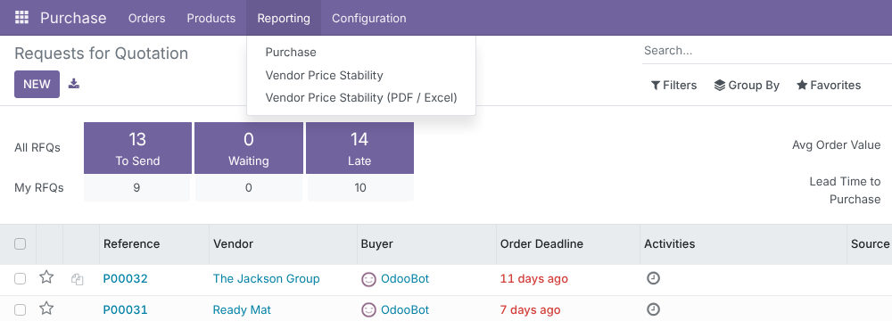
In Purchase › Configuration › Settings › Price Intelligence: switch Advanced Last Purchase Price on or off, choose the Last Price Source (Same Vendor or Any Vendor), set a Neutral Variance Band (%) under which a change counts as unchanged, and the Stable / Volatile Threshold (CV %) used by the stability report. Every value is stored per company.
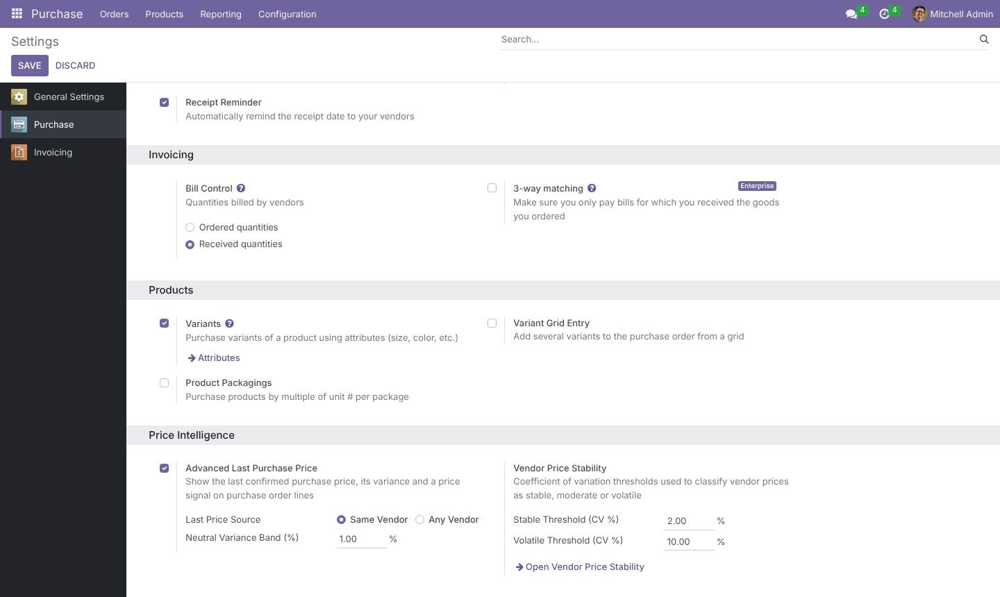
New columns next to Unit Price: Last Price, Var. % and Signal. Red Price Up means you are about to pay more than last time, green Price Down means less, Unchanged stays inside the neutral band, No History means the product was never bought (from this vendor). The pedal bins below were last bought at 600.00 per dozen and are now quoted at 50.00 per unit: correctly shown as Unchanged.
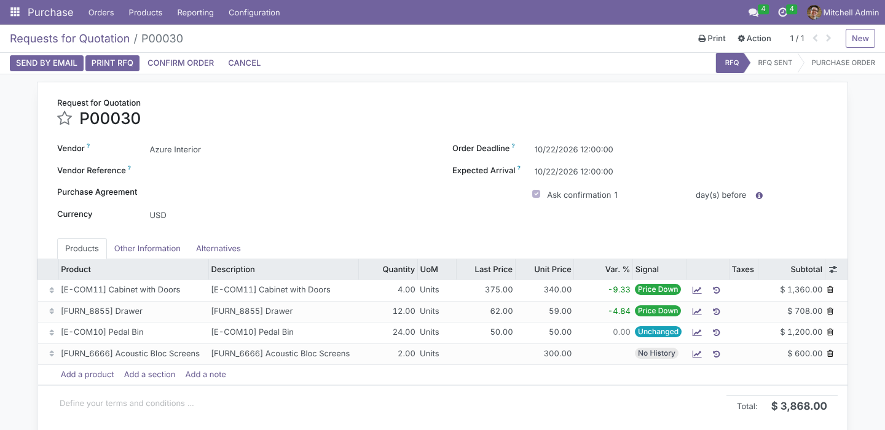
Optional columns show where the last price comes from: Last UoM, Last Currency, Hist. Rate (the rate stored on the historical order), Last PO and Last Purchase date. Here Ready Mat was last paid 281.00 EUR at a rate of 0.86; the new RFQ is in USD, so the last price is shown as 326.74 USD.
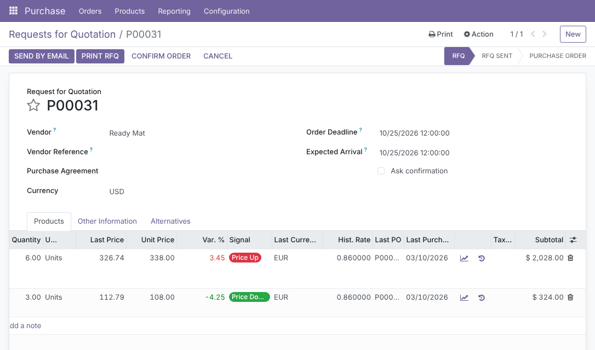
In Alternatives › Compare Product Lines (Purchase Agreements), each vendor’s offer shows its own Last Price, Var. % and Signal, plus an optional Last Vendor column, so you choose the best offer knowing who raised prices.
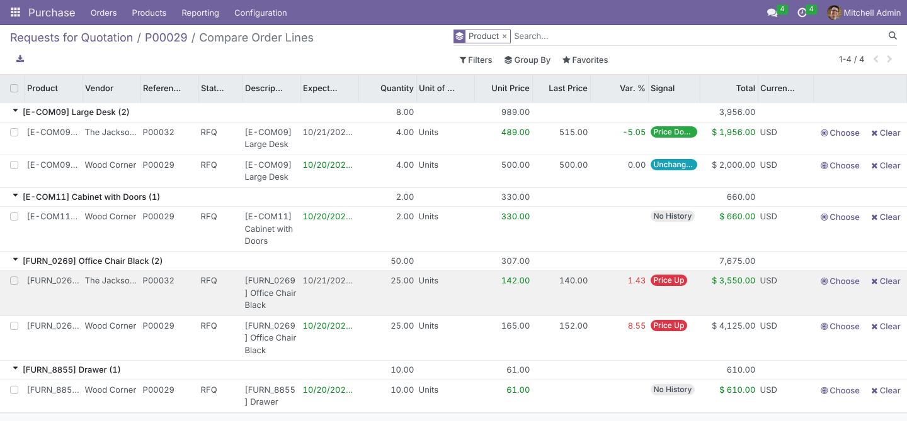
Every confirmed purchase line, priced per product unit of measure and in company currency, compared with the previous purchase of the same product from the same vendor. The pivot crosses vendor × product × quarter with Avg Unit Price, Min Unit Price, Max Unit Price, Avg Fluctuation (%) and # Purchases.
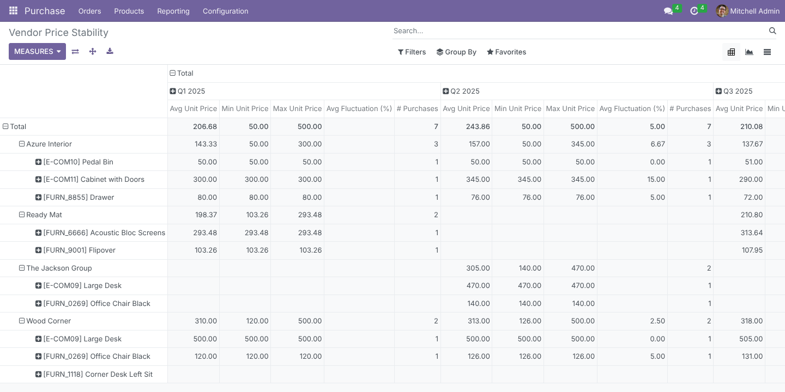
The graph compares vendors for one product over time: Wood Corner raised Office Chair Black every quarter, from 120.00 to 152.00, while The Jackson Group held 140.00.
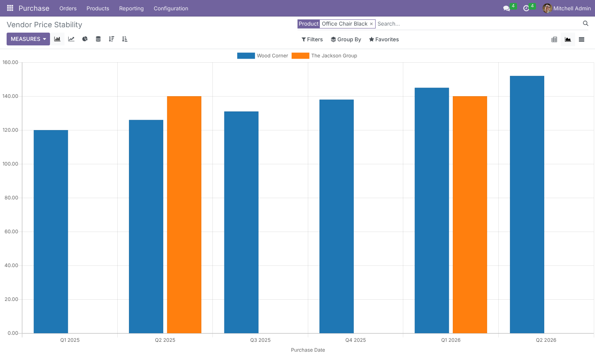
The list shows each purchase with Previous Unit Price, Variance (%) and Trend (First Purchase, Price Up, Price Down, Stable). Filters: trend, Fluctuation above 5% / 10%, purchase date; group by vendor, product, category, trend, buyer, company or order currency.
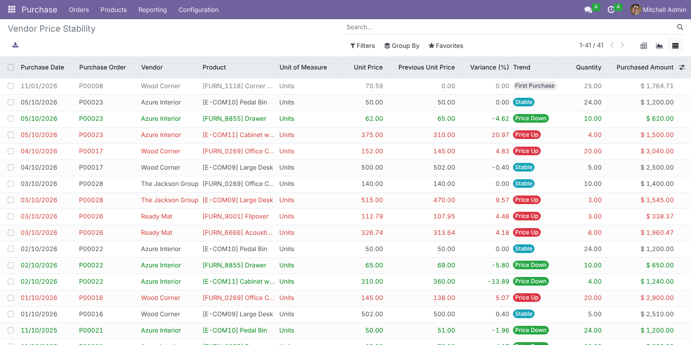
Filter by period, Vendors, Products, Product Categories, Price Trend (Rising, Falling, Flat), Stability (Stable, Moderate, Volatile) and Minimum Purchases. Then Print PDF, Export Excel or Open Analysis with the same filters.
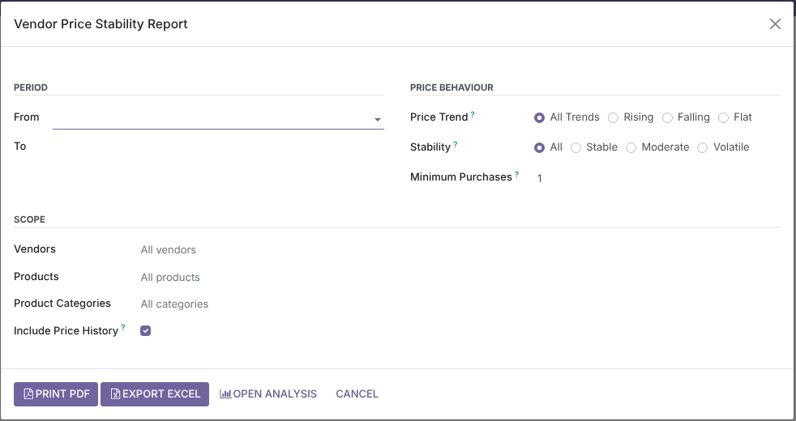
KPI cards (pairs, purchases analysed, rising, falling, volatile, average score), then one block per vendor with first, last, min, max and average price, CV %, Change %, trend and stability badges and a score bar.
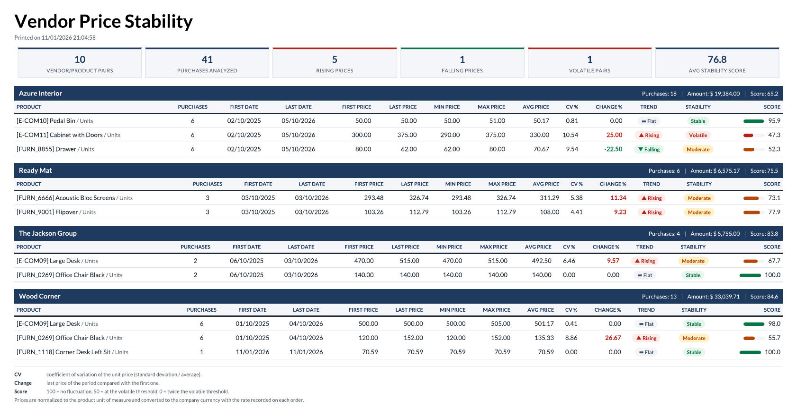
Sheet Stability Summary: KPIs and 24 columns per vendor/product with autofilter, frozen panes, coloured Change % and a red-to-green score scale. Optional sheet Price History: every purchase with order currency, rate and normalized price. Pages are set to A4 landscape, one page wide.
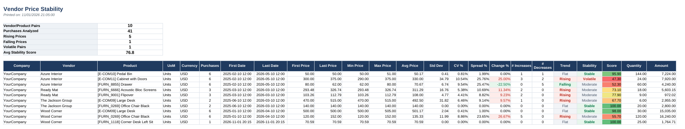
The Price Stability smart button on the product form opens the analysis filtered on that product, in pivot and graph.
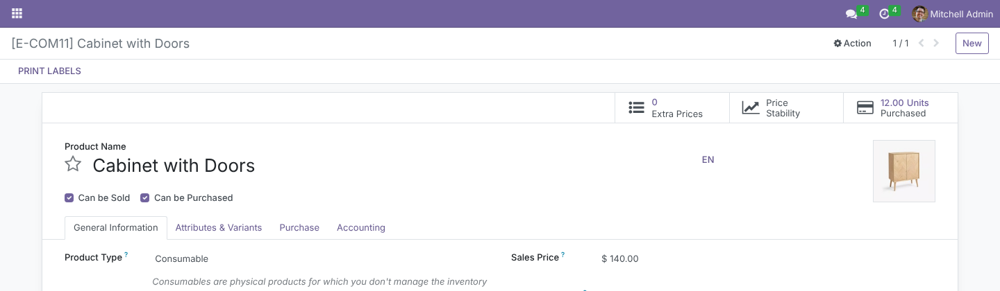
Every field, selection, menu, view, report and message is translated in ar_001. The backend, the PDF and the Excel sheets switch to right-to-left automatically.
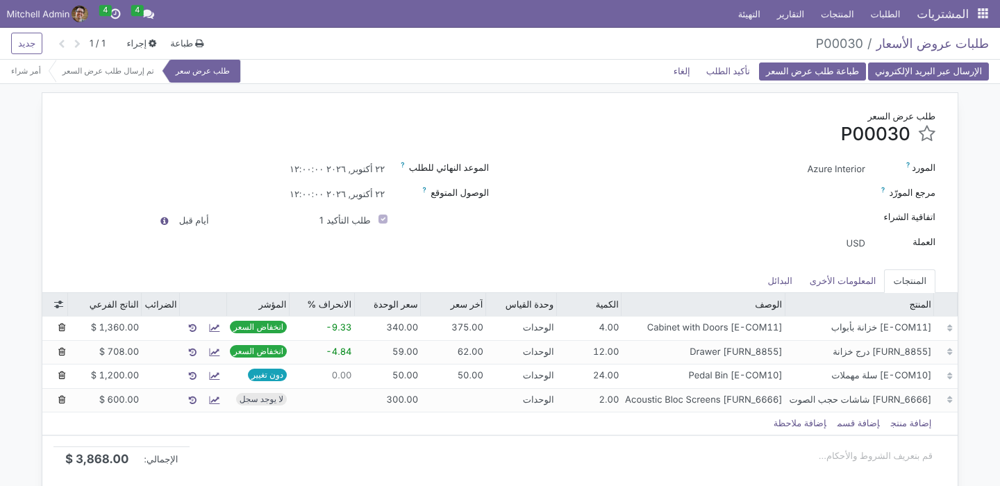
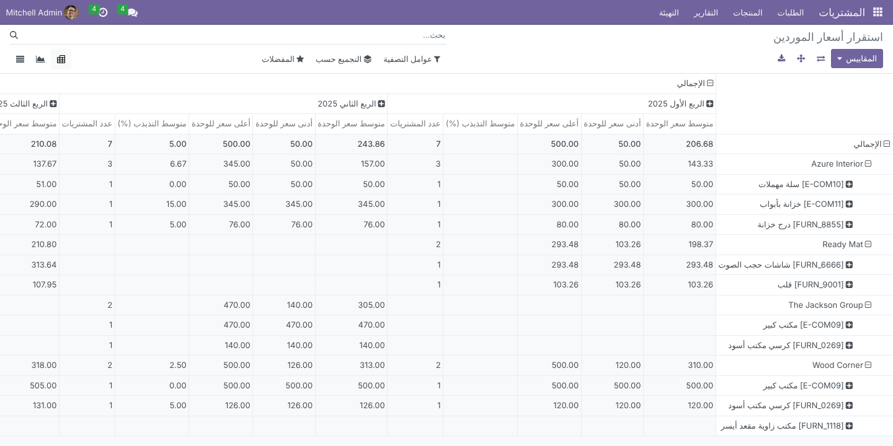
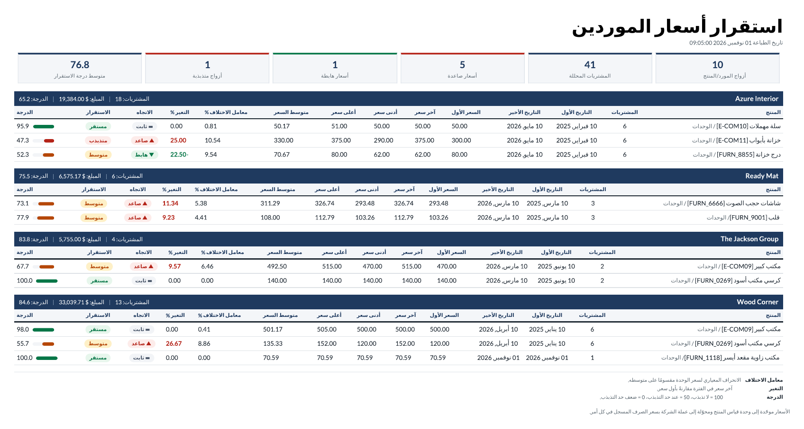
What each badge means.
Each of these is covered by an automated test.
Uses the standard Purchase groups; no new group to assign.
| Who | Sees |
|---|---|
| Purchase / User | Last price columns and signals on RFQ lines, the chart button on lines and the Price Stability product button (read-only analysis) |
| Purchase / Administrator | Everything above, plus both Reporting menus (analysis, PDF and Excel) |
| Settings / Administration | The Price Intelligence settings (enable, source, band, thresholds) |
| Multi-company | Record rule on the analysis: only companies the user has access to |
| Odoo version | 16.0, Community and Enterprise |
| Depends on | purchase, purchase_requisition |
| Python dependency | xlsxwriter (already in Odoo’s requirements) |
| Menus | Purchase › Reporting › Vendor Price Stability; Purchase › Reporting › Vendor Price Stability (PDF / Excel) |
| Settings | Purchase › Configuration › Settings › Price Intelligence |
| Models | lpp.vendor.price.report (SQL view), lpp.stability.wizard; extends purchase.order.line, purchase.order, res.company, res.config.settings, product.template |
| Performance | Batched SQL lookup with window functions and a partial index on purchase_order_line(product_id, order_id); report statistics aggregated in SQL |
| Translations | Arabic (ar_001), RTL-ready backend, PDF and Excel |
| Automated tests | 25: toggle, signals, confirmed-only history, own order excluded, UoM and multi-currency conversion, vendor scope, neutral band, 300-line single query, form onchange, report trends and statistics, wizard filters, Excel, PDF, Arabic RTL, multi-company rule |
| License | LGPL-3 |
Questions, a demo, or an adaptation to your own process? Get in touch.
✉ ibrahim.yahiah@gmail.com LinkedIn: Ibrahim YahiaAuthor: Ibrahim Yahia · License: LGPL-3